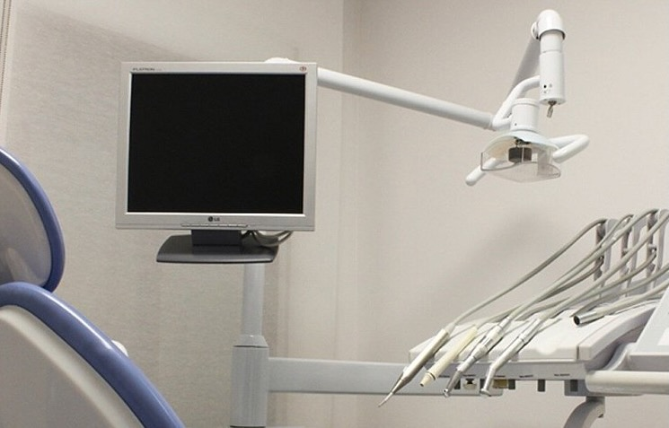

Wie kann man Kinder beruhigen?
- - Eine Theorie mancher Hirnforscher: Naturgeräusche beeinflussen das sogenannte Grundeinstellungsnetzwerk im Gehirn. Natürliche Geräusche in diesen Hirnregionen führen einer Studie zufolge dazu, dass man sich entspannen und Stress abbauen kann (Sprengart, Kölbel, 2019)
- - Kann während der Behandlung angewendet werden
- - Man braucht bequeme Haltung (Durch Behandlungsstuhl gegeben)
- - In Gedanken reist man an einen schönen Ort: durch unser Strand soll sich das Kind an diesen Strand versetzten (Bertram, 2015)
- - Blau- und Grautöne wirken beruhigend (AOK Redaktion, 2021)
- - Beim Anblick der Farbe Blau sinkt tatsächlich unser Adrenalinspiegel, der Puls verlangsamt sich und die Muskeln entkrampfen (Home24, o. D.)
- - Strandgeräusche wie Atmen darstellen
Naturgeräusche und Klaviermusik:
Wahrnehmungslenkung-Übung:
Farben:
Ruhiges Atmen:
Weitere Ideen
Farbensymbolik
Grün = Glück und Hoffnung
- Die Farbe Grün wirkt entspannend, erholend, nervenruhigend und reguliert den Blutdruck (Bauernfeind, 2022).
Orange = Wärme
- Orange ist das Synonym für Licht und Wärme. Es steht für das Leben und ist stimmungsaufhellend (Alpina Farben, o.D.)
Gelb = Optimismus
- Die Farbe Geld wird entspannend wahrgenommen und steht für Optimismus (Daniela, 2020)
Lila = Gleichgewicht
- Die Farbe Lila stärkt das seelische Gleichgewicht und fördert die Entscheidungskraft (Questico, o. D.)
Blau = Harmonie
- Die Farbe Blau hat eine beruhigende Wirkung und vermittelt ein Gefühl von Vertrauen und Sicherheit (Alpina Farben, o.D.)
Weiteres
Räume und deren Atmosphäre/Geräusche:
Slogan:
Ablauf
- Kinder werden 2-3 Minuten vor der Behandlung in den Behandlungsraum gebracht, wo sie den Film dann auf einem Bildschirm anschauen
- sobald der Arzt kommt, sorgt ein fließender Übergang zu einem Strandbild mit Meeresrauschen für Entspannung und Gelassenheit.
